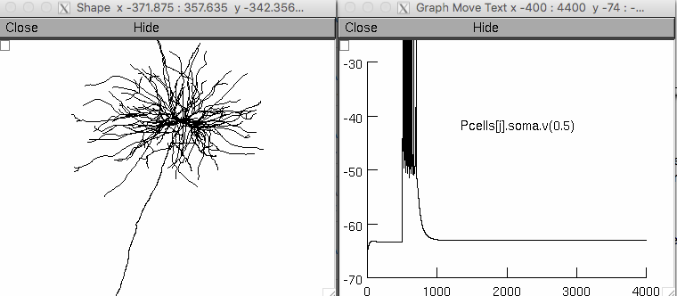

This model corresponds to the paper: "Basal tree complexity shapes
functional pathways in the prefrontal cortex", Papoutsi et al., 2017
The code was written in NEURON version 7.3
Model usage:
Download and expand the archive and compile the mod files located in
the "mod_files" folder.
In the simulation folder:
"network_coincidence.hoc" sets up the simulation parameters and runs
the model.
"L5PFC_biophysics.hoc" defines the biophysical properties of pyramidal
neurons.
"incell.hoc" defines the biophysical properties of the fast-spiking
interneuron.
"microcircuit.hoc" includes the procedures for connecting neurons.
"background_noise.hoc" includes the procedures for spontaneous
activity.
"time_stim.hoc" includes procedures for activating the pyramidal
neurons.
To generate the data corresponding to Figure 7 of Papoutsi et al.,
2017, run run_network_time.sh
Specifically, simulation parameters are:
cl_id (1,2): Select the cluster (corresponding to different
morphologies of the basal tree) to simulate.
interval_t: the inter-stimulus interval of the two events.
num_run: the number of repetitions.
Parameters are for the scaled condition of the biophysical properties
of neurons with their original morphologies. For the uniform condition
set "SCALED" parameter in L5PFC_biophysics.hoc to 0 and for the
modified morphologies (same soma and apical tree, different basal
trees) modify the basepath in L5PFC_biophysics.hoc:
manipulation="modified".
20170726:
To simulate an instance of the model run mosinit.hoc, which runs the
simulation once with a particular choice of parameters to demonstrate
the model running. For more help on running see:
https://senselab.med.yale.edu/ModelDB/NEURON_DwnldGuide.cshtml
When the model starts click on the "run simulation" button, then after
a couple minutes you will see graphs like the one on the right:

The graph on the left was created in the NEURON GUI by selecting
Graph -> Shape plot.